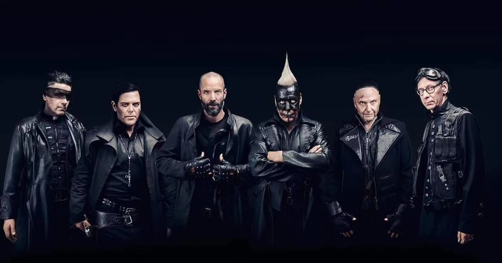
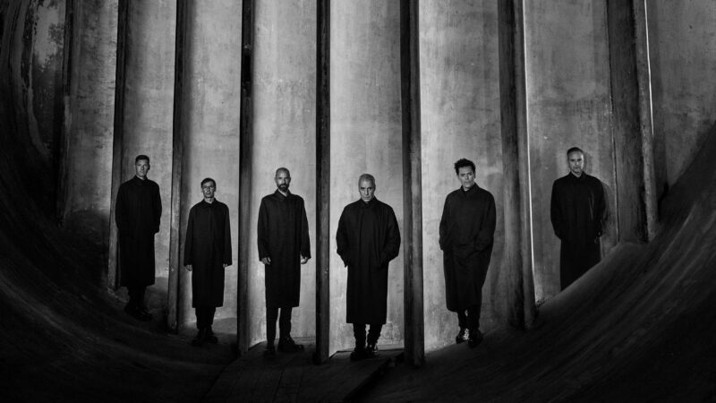

RAMMSTEIN
Rammstein es una banda de metal industrial originaria de Alemania, conocida por su distintivo estilo musical y actuaciones en vivo impactantes. La formación de la banda se remonta a principios de la década de 1990 en Berlín, cuando un grupo de músicos talentosos se unió para crear una experiencia musical única que fusionaría el metal pesado con elementos industriales y electrónicos.
El nombre de la banda proviene de la tragedia aérea de Ramstein en 1988, un desastre aéreo en el que murieron numerosas personas durante un espectáculo aéreo en la base aérea de Ramstein en Alemania. Este nombre provocador y la estética controvertida de la banda establecieron desde el principio una reputación de provocación y desafío.
Rammstein lanzó su álbum debut homónimo en 1995, que incluía canciones como "Du Riechst So Gut" y "Seemann". El éxito de este álbum los llevó a una creciente base de seguidores tanto en Alemania como en todo el mundo. Con cada nuevo álbum, la banda consolidó su posición como una de las bandas de metal industrial más influyentes del mundo.
Uno de los aspectos más distintivos de Rammstein es su espectacular puesta en escena en vivo. Sus conciertos suelen incluir pirotecnia, efectos visuales impactantes y un despliegue teatral que convierte cada actuación en una experiencia inolvidable.
A lo largo de su carrera, Rammstein ha lanzado álbumes icónicos como "Sehnsucht" (1997), "Mutter" (2001), "Reise, Reise" (2004) y "Liebe ist für alle da" (2009). Cada uno de estos álbumes ha contribuido a dar forma al sonido distintivo de la banda y ha generado himnos inmortales como "Du Hast" y "Ich Will".
La banda continúa cautivando a sus seguidores y sorprendiendo al mundo con su creatividad musical y su enfoque artístico único. A lo largo de los años, Rammstein ha demostrado ser mucho más que una banda de metal; es una experiencia visual y auditiva que sigue dejando una huella imborrable en la historia de la música.
Hoy en día, Rammstein sigue siendo una de las bandas más influyentes y respetadas en la escena del metal, y su legado perdurará en el tiempo como un símbolo de innovación y provocación en la música rock.
